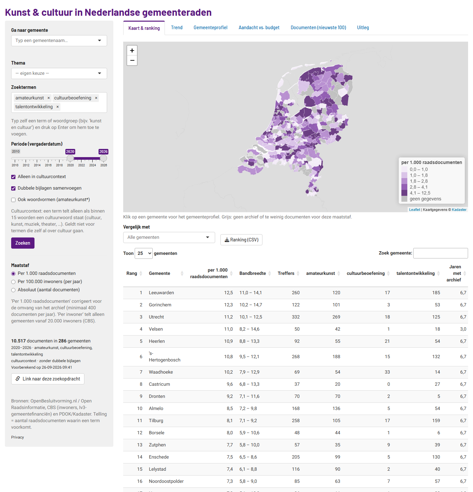
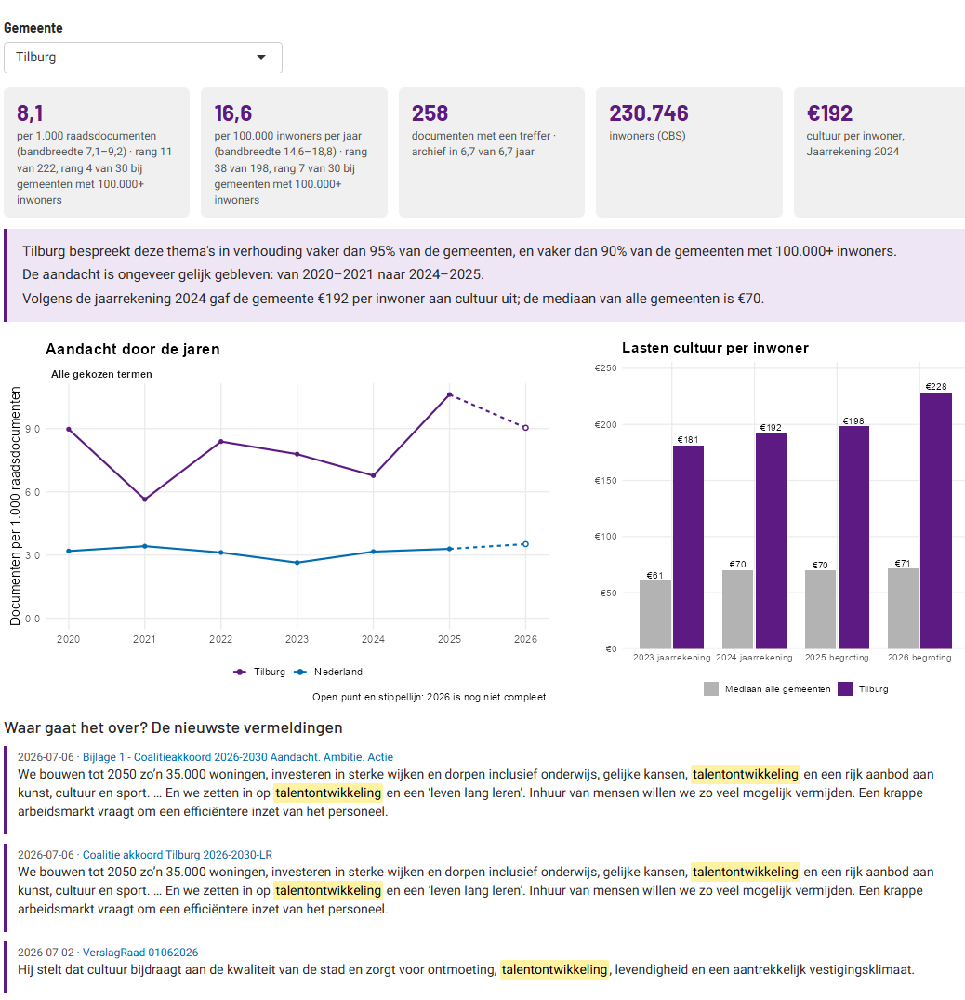
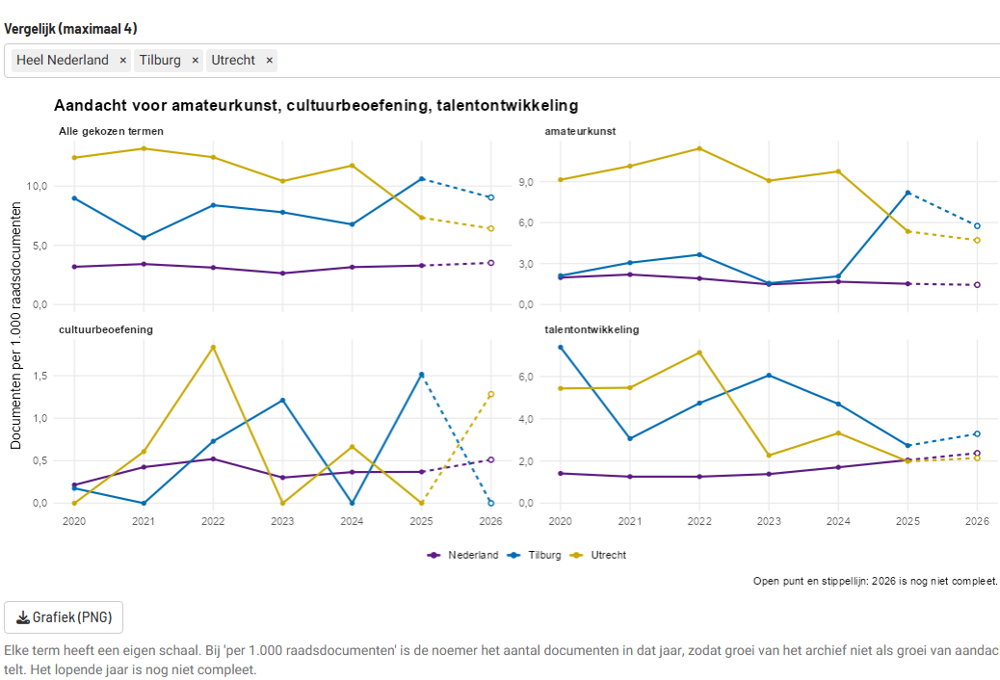
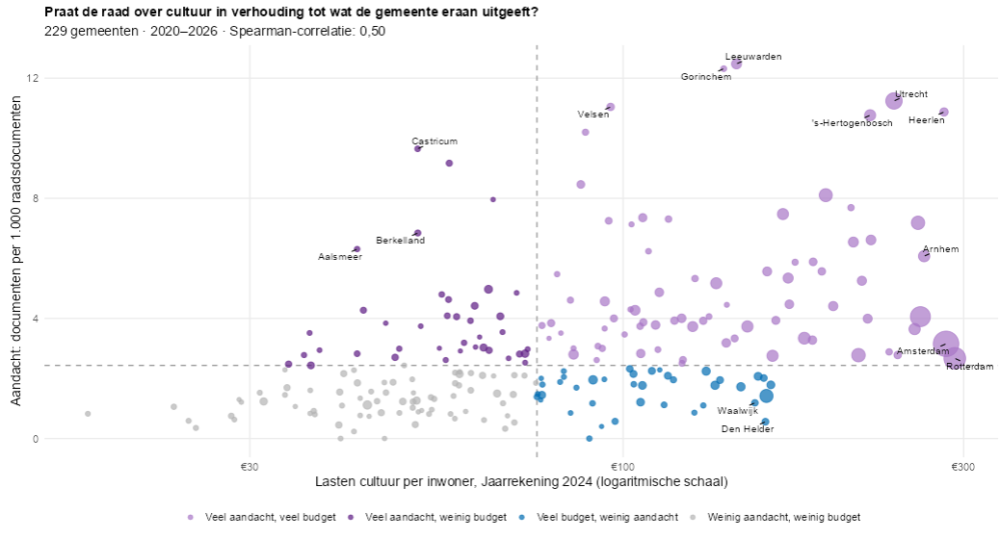

Wat kun je ermee?
Kaart en ranking
Alle gemeenten ingekleurd en gerangschikt: per 1.000 raadsdocumenten, per 100.000 inwoners of absoluut. Sorteerbaar en doorzoekbaar.
Vergelijkbare gemeenten
De rang binnen de eigen grootteklasse, zodat een grote stad wordt vergeleken met andere grote steden.
Trend en vergelijken
Een eigen grafiek per term, voor tot vier gemeenten naast heel Nederland.
Gemeenteprofiel
Kerncijfers, een samenvatting in gewone taal, cultuurlasten 2023–2026 en de zinnen waarin de termen voorkomen.
Aandacht vs. budget
Welke gemeenten praten veel over cultuur maar geven er weinig aan uit, en omgekeerd?
Uitleg en export
De methode in gewone taal, CSV- en PNG-export en een deelbare link die de zoekopdracht bewaart.

Eerlijker tellen
van de treffers is dezelfde bijlage bij meerdere agendapunten. Die worden per gemeente samengevoegd, in de treffers én in de noemer.
van de treffers voor talentontwikkeling gaat niet over cultuur. Een contextfilter houdt alleen vermeldingen dicht bij cultuurwoorden over.
bandbreedte (exact Poisson) bij elke waarde. Gemeenten met minder dan 10 treffers krijgen geen rang: hun plek is vooral toeval.
tellen alleen de jaren met archief mee, zodat gemeenten met een later begonnen of onvolledig archief niet benadeeld worden.


Onder de motorkap
Niet-blokkerend zoeken
Live zoekvragen aan de Elasticsearch-API lopen asynchroon (ExtendedTask + mirai), zodat andere bezoekers door kunnen werken.
Nachtelijke voorberekening
Een GitHub Action rekent de standaardvragen vooraf uit. De app controleert die data op versie en leeftijd en valt anders terug op live ophalen.
Getest en veilig
Tests zonder netwerk in CI bij elke push, ge-escapete brontekst, CSV-export beschermd tegen formule-injectie en Actions vastgezet op een commit-SHA.
Zelf starten
Je hebt R 4.4 of nieuwer nodig. Installeer de pakketten en start de app vanuit de map van het project:
install.packages(c("shiny", "bslib", "httr2", "jsonlite", "dplyr", "tidyr",
"leaflet", "ggplot2", "ggrepel", "DT", "cbsodataR", "sf",
"cachem", "mirai"))
shiny::runApp()Meer over de methode, de tests en de opzet staat in de README.
Kanttekeningen
- 51 van de 342 gemeenten hebben geen archief in OpenBesluitvorming.
- Archieven gaan niet overal even ver terug. Vergelijk daarom binnen één periode.
- Een vermelding is geen beleid: het kan om een bijlage of een verworpen motie gaan. Het gemeenteprofiel toont de zinnen, zodat je dat kunt nagaan.
- Het cultuurbudget is een indicatie: kapitaallasten en verrekeningen tellen mee.